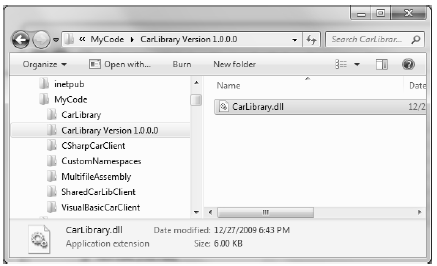
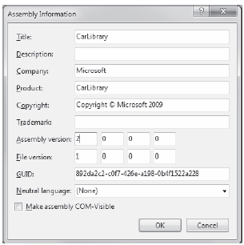
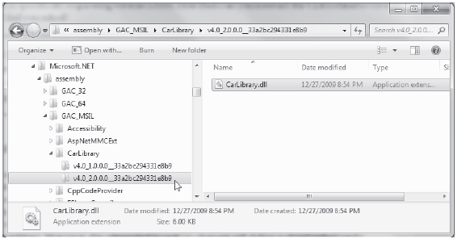

Like private assemblies, shared assemblies can be configured using a client *.config file. Of course, because shared assemblies are deployed to a well-known location (the .NET 4.0 GAC), you don’t use the <privatePath> element as you did for private assemblies (although if the client is using both shared and private assemblies, the <privatePath> element may still exist in the *.config file).
You can use application configuration files in conjunction with shared assemblies whenever you wish to instruct the CLR to bind to a different version of a specific assembly, effectively bypassing the value recorded in the client’s manifest. This can be useful for a number of reasons. For example, imagine that you have shipped version 1.0.0.0 of an assembly and later discover a major bug. One corrective action would be to rebuild the client application to reference the correct version of the bug-free assembly (say, 1.1.0.0) and redistribute the updated client and new library to every target machine.
Another option is to ship the new code library and a *.config file that automatically instructs the runtime to bind to the new (bug-free) version. As long as the new version has been installed into the GAC, the original client runs without recompilation, redistribution, or fear of having to update your resume.
Here’s another example: you have shipped the first version of a bug-free assembly (1.0.0.0), and after a month or two, you add new functionality to the assembly to yield version 2.0.0.0. Obviously, existing client applications that were compiled against version 1.0.0.0 have no clue about these new types, given that their code base makes no reference to them.
New client applications, however, wish to make reference to the new functionality in version 2.0.0.0. Under .NET, you are free to ship version 2.0.0.0 to the target machines, and have version 2.0.0.0 run alongside the older version 1.0.0.0. If necessary, existing clients can be dynamically redirected to load version 2.0.0.0 (to gain access to the implementation refinements), using an application configuration file without needing to recompile and redeploy the client application.
To illustrate how to dynamically bind to a specific version of a shared assembly, open Windows Explorer and copy the current version of the compiled CarLibrary.dll assembly (1.0.0.0) into a distinct subdirectory (I called mine “CarLibrary Version 1.0.0.0”) to symbolize the freezing of this version (see Figure 14-24).
Figure 14-24Freezing the current version of CarLibrary.dll
Now, open your existing CarLibrary project and update your code base with a new enum type named MusicMedia that defines four possible musical devices:
// Which type of music player does this car have? public enum MusicMedia { musicCd, musicTape, musicRadio, musicMp3 }
As well, add a new public method to the Car type that allows the caller to turn on one of the given media players (be sure to import the System.Windows.Forms namespace within Car.cs if necessary):
public abstract class Car { ... public void TurnOnRadio(bool musicOn, MusicMedia mm) { if(musicOn) MessageBox.Show(string.Format("Jamming {0}", mm)); else MessageBox.Show("Quiet time..."); } ... }
Update the constructors of the Car class to display a MessageBox that verifies you are indeed using CarLibrary 2.0.0.0:
public abstract class Car { ... public Car() { MessageBox.Show("CarLibrary Version 2.0!"); } public Car(string name, int maxSp, int currSp) { MessageBox.Show("CarLibrary Version 2.0!"); PetName = name; MaxSpeed = maxSp; CurrentSpeed = currSp; } ... }
Last but not least, before you recompile your new library, update the version to be 2.0.0.0. Recall you can do so in a visual manner by double-clicking on the Properties icon of the Solution Explorer and clicking on the Assembly Information... button on the Application tab. Once you do, simply update the Assembly Version number (Figure 14-25).
Figure 14-25 Figure Text
If you look in your project’s \bin\Debug folder, you’ll see that you have a new version of this assembly (2.0.0.0), while version 1.0.0.0 is safe in storage in the CarLibrary Version 1.0.0.0 directory. Install this new assembly into the 4.0 GAC using gacutil.exe as described earlier in this chapter. Notice that you now have two versions of the same assembly (see Figure 14-26).
Figure 14-26 Figure Text
If you run the current SharedCarLibClient.exe program by double-clicking the icon in Windows Explorer, you should not see the “CarLibrary Version 2.0!” message box appear, as the manifest is specifically requesting version 1.0.0.0. How then can you instruct the CLR to bind to version 2.0.0.0? Glad you asked!
Note Visual Studio 2010 will automatically reset references when you compile your applications! Therefore, if you run your SharedCarLibClient.exe application within Visual Studio 2010, it will grab CarLibrary.dll version 2.0.0.0! If you accidentally ran your application in this way, simply delete the current CarLibrary.dll reference and select version 1.0.0.0 (which I suggested you place in a folder named CarLibrary Version 1.0.0.0).
When you want to tell the CLR to load a version of a shared assembly other than the version listed in the manifest, you can build a *.config file that contains a <dependentAssembly> element. When doing so, you will need to create an <assemblyIdentity> subelement that specifies the friendly name of the assembly listed in the client manifest (CarLibrary, for this example) and an optional culture attribute (which can be assigned an empty string or omitted altogether if you wish to use the default culture for the machine). Moreover, the <dependentAssembly> element will define a <bindingRedirect> subelement to define the version currently in the manifest (via the oldVersion attribute) and the version in the GAC to load instead (via the newVersion attribute).
Create a new configuration file in the application directory of SharedCarLibClient named SharedCarLibClient.exe.config that contains the following XML data.
Note The value of your public key token will be different from what you see in the following markup, and it can be obtained either by examining the client manifest using ildasm.exe or via the GAC.
<configuration>
<runtime>
<assemblyBinding xmlns="urn:schemas-microsoft-com:asm.v1">
<dependentAssembly>
<assemblyIdentity name="CarLibrary"
publicKeyToken="33A2BC294331E8B9"
culture="neutral"/>
<bindingRedirect oldVersion= "1.0.0.0"
newVersion= "2.0.0.0"/>
</dependentAssembly>
</assemblyBinding>
</runtime>
</configuration>
Now run the SharedCarLibClient.exe program by double-clicking the executable from Windows Explorer. You should see the message that version 2.0.0.0 has loaded.
Multiple <dependentAssembly> elements can appear within a client’s configuration file. Although there’s no need for this example, assume that the manifest of SharedCarLibClient.exe also references version 2.5.0.0 of an assembly named MathLibrary. If you wanted to redirect to version 3.0.0.0 of MathLibrary (in addition to version 2.0.0.0 of CarLibrary), the SharedCarLibClient.exe.config file would look like the following:
<configuration>
<runtime>
<assemblyBinding xmlns="urn:schemas-microsoft-com:asm.v1">
<!-- Controls Binding to CarLibrary -->
<dependentAssembly>
<assemblyIdentity name="CarLibrary"
publicKeyToken="33A2BC294331E8B9"
culture=""/>
<bindingRedirect oldVersion= "1.0.0.0" newVersion= "2.0.0.0"/>
</dependentAssembly>
<!-- Controls Binding to MathLibrary -->
<dependentAssembly>
<assemblyIdentity name="MathLibrary"
publicKeyToken="33A2BC294331E8B9"
culture=""/>
<bindingRedirect oldVersion= "2.5.0.0" newVersion= "3.0.0.0"/>
</dependentAssembly>
</assemblyBinding>
</runtime>
</configuration>
Note It is possible to specify a range of old version numbers via the oldVersion attribute; for example, <bindingRedirect oldVersion="1.0.0.0-1.2.0.0" newVersion="2.0.0.0"/> informs the CLR to use version 2.0.0.0 for any older version within the range of 1.0.0.0 to 1.2.0.0.